Ball & Beam: System Modeling
Key MATLAB commands used in this tutorial are: tf , ss
Contents
Physical setup
A ball is placed on a beam, see figure below, where it is allowed to roll with 1 degree of freedom along the length of the beam. A lever arm is attached to the beam at one end and a servo gear at the other. As the servo gear turns by an angle , the lever changes the angle of the beam by . When the angle is changed from the horizontal position, gravity causes the ball to roll along the beam. A controller will be designed for this system so that the ball's position can be manipulated.

System parameters
For this problem, we will assume that the ball rolls without slipping and friction between the beam and ball is negligible. The constants and variables for this example are defined as follows:
(m) mass of the ball 0.11 kg
(R) radius of the ball 0.015 m
(d) lever arm offset 0.03 m
(g) gravitational acceleration 9.8 m/s^2
(L) length of the beam 1.0 m
(J) ball's moment of inertia 9.99e-6 kg.m^2
(r) ball position coordinate
(alpha) beam angle coordinate
(theta) servo gear angle
Design criteria
- Settling time < 3 seconds
- Overshoot < 5%
System equations
The second derivative of the input angle actually affects the second derivative of . However, we will ignore this contribution. The Lagrangian equation of motion for the ball is then given by the following:
(1)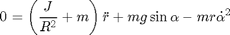
Linearization of this equation about the beam angle, , gives us the following linear approximation of the system:
(2)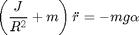
The equation which relates the beam angle to the angle of the gear can be approximated as linear by the equation below:
(3)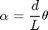
Substituting this into the previous equation, we get:
(4)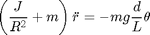
1. Transfer Function
Taking the Laplace transform of the equation above, the following equation is found:
(5)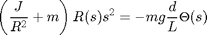
Rearranging we find the transfer function from the gear angle (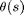) to the ball position (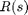).
(6)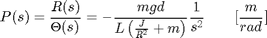
It should be noted that the above plant transfer function is a double integrator. As such it is marginally stable and will provide a challenging control problem.
The transfer function can be implemented in MATLAB as follows:
m = 0.111;
R = 0.015;
g = -9.8;
L = 1.0;
d = 0.03;
J = 9.99e-6;
s = tf('s');
P_ball = -m*g*d/L/(J/R^2+m)/s^2
P_ball = 0.21 ---- s^2 Continuous-time transfer function.
2. State-Space
The linearized system equations can also be represented in state-space form. This can be done by selecting the ball's position () and velocity () as the state variable and the gear angle () as the input. The state-space representation is shown below:
(7)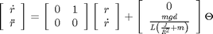
However, for our state-space example we will be using a slightly different model. The same equation for the ball still applies but instead of controlling the position through the gear angle, , we will control the torque of the beam. Below is the representation of this system:
(8)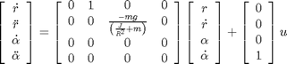
(9)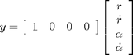
Note: For this system the gear and lever arm would not be used, instead a motor at the center of the beam will apply torque to the beam, to control the ball's position.
The state-space equations can be represented in MATLAB with the following commands (these equations are for the torque control model).
H = -m*g/(J/(R^2)+m); A = [0 1 0 0 0 0 H 0 0 0 0 1 0 0 0 0]; B = [0 0 0 1]'; C = [1 0 0 0]; D = [0]; ball_ss = ss(A,B,C,D)
ball_ss =
a =
x1 x2 x3 x4
x1 0 1 0 0
x2 0 0 7 0
x3 0 0 0 1
x4 0 0 0 0
b =
u1
x1 0
x2 0
x3 0
x4 1
c =
x1 x2 x3 x4
y1 1 0 0 0
d =
u1
y1 0
Continuous-time state-space model.